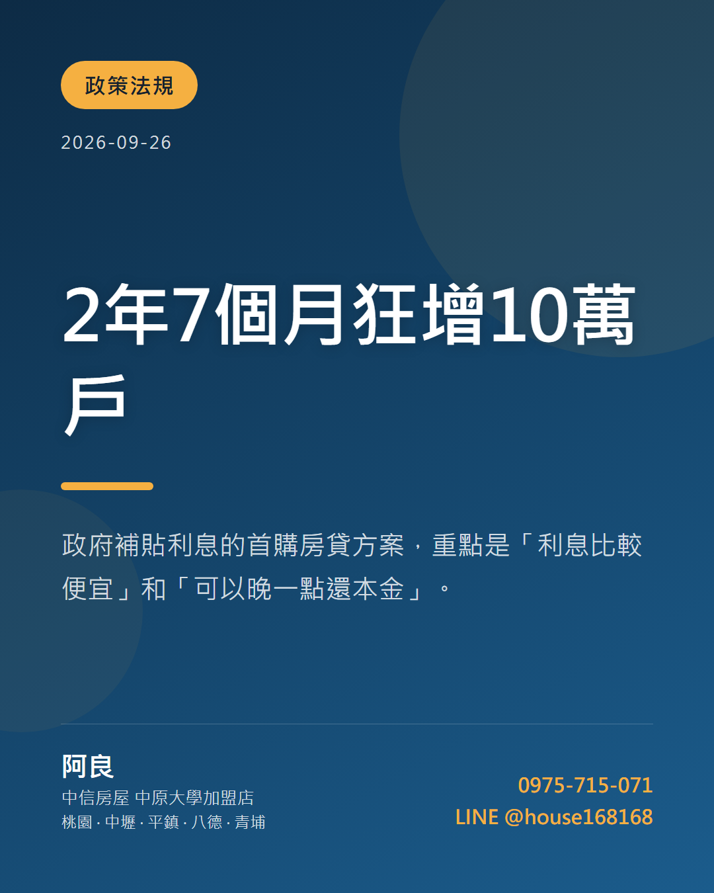

2026-09-24，ETtoday 房產報導了這件事。報導裡值得記下來的數字是這幾個：
以上是原始報導的數據，我沒有改動。下面是我的解讀。
政府補貼利息的首購房貸方案，重點是「利息比較便宜」和「可以晚一點還本金」。
它解決的是「每個月付得出來嗎」，不是「頭期款夠不夠」。很多人以為新青安等於不用自備款，這是誤會——自備款該準備的還是要準備。
好處是前幾年月付金壓力小。要注意的是寬限期結束後月付金會跳一階，簽約前一定要自己算一次「寬限期過了以後我每個月要付多少」，那才是你真正的負擔。
以桃園區來說，主要買方是換屋族、企業主管、重視門面與學區的家庭。藝文特區的餐飲與生活密度全桃園最高、市政資源集中、桃園火車站將地下化。要注意的是：新舊區落差大；藝文特區的價格已經在高位，要看清楚買的是機能還是名氣。
實務上我會建議：先去銀行問你自己的條件能貸到多少，再開始看房。順序反過來的人，最後常常是看上了才發現買不起，白花好幾個週末。
你的買方裡有很大一部分靠這個方案。方案的條件一改，你的買方池子就會變大或變小，這比多數人以為的更直接影響你多久賣得掉。
講白一點：買方變少的時候，價格開高不會讓你賣得比較貴，只會讓你賣得比較久。而拖越久，你要付的持有成本、時間成本、還有心情成本都在累積。
定價的依據要是「同社區、近半年、條件最像的那幾筆成交」，不是社區裡賣最貴的那一筆，也不是你當初買的價格。
最常被誤會的一點：以為額度就是自己能貸到的錢。實際能貸多少還是看你的收入、信用和銀行對這間房子的鑑價。
這件事我在帶看的時候幾乎每個月都要解釋一次。會誤會不是因為誰笨，是因為新聞標題本來就寫得簡單，而制度的細節都藏在條件裡。